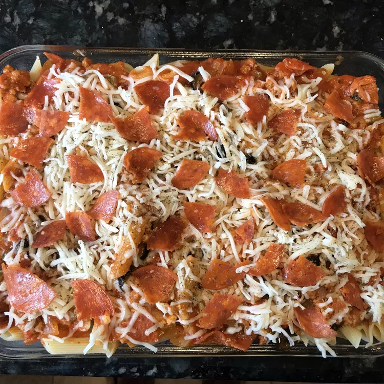

Pasta Bake

Simple to make Pizza Pasta Bake with Sausage
This versatile one-dish pizza pasta bake uses
your favorite pizza ingredients like bell
pepper, sausage, pepperoni, and olives —
and you can use your family's favorite pasta
shapes.
What you will need:
- 1lb Pasta (Any Shape)
- 1lb Italian Sausage
- 1 Green Bell Pepper
- 0.5 Sweet Onion, Diced
- 4oz Sliced Pepperoni
- 2oz Sliced Black Olives
- 2oz Cream Cheese
- 1 Jar of RAGU Traditional Sauce
- 2 Cups Shredded Mozzarella Cheese
- 0.5 tsp Italian Seasoning
Directions:
- Preheat the oven to 350 degrees F
(175 degrees C). Lightly spray a 9x13-inch
baking dish with cooking spray.
- Bring a large pot of water to a boil
and cook pasta according to package instructions
- While pasta is cooking, cook sausage in skillet
over medium heat until just lightly pink. Add green
bell pepper and onion to sausage. Continue cooking
until meat is cooked through. Add pepperoni, olives,
cream cheese, and sauce. Cook over low heat until
heated through and cheese has melted.
- When pasta is done, drain and return to
the pot. Stir sausage mixture into the pasta; stir to coat
- Add half of the pasta mixture to the prepared
baking dish. Top with half of the mozzarella cheese.
Spread remaining pasta over cheese and top with the
remaining mozzarella cheese. Sprinkle with italian
seasoning and place a few pepperoni slices on top
if you like.
- Bake until cheese has melted and pasta is
heated through, usually takes about 15 minutes.
- Serve up and enjoy!
>